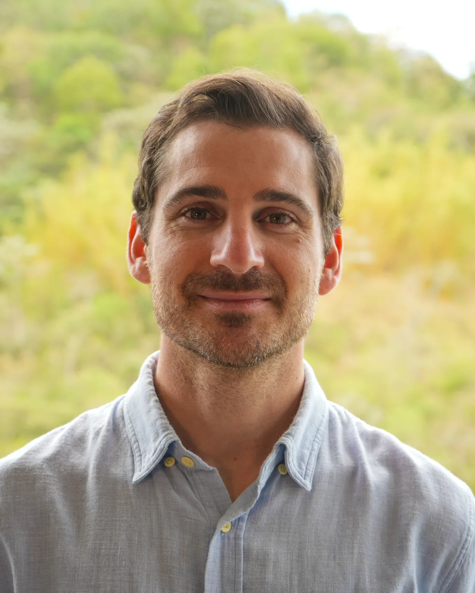
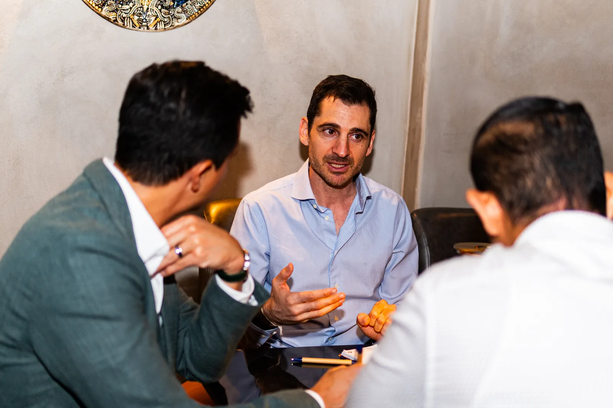
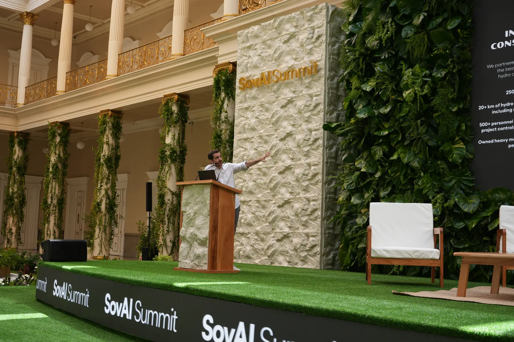

Energy · Capital · Education
Adam Nili
Multidisciplinary thinker searching for signal in a noisy world.


01 / About
Adam Nili is a lifelong entrepreneur, investor, and philanthropist. He has built and advised companies across the United States, Argentina, Colombia, Puerto Rico, and El Salvador, and has led teams in 29 other countries. His work today sits where energy, capital, and education meet.
Energy
The physical infrastructure a digital economy runs on. Through Autoridad Panandina, Adam develops vertically integrated energy projects to power large-scale compute in regions of energy abundance.
Capital
Advisory and investment that help good ideas scale. Through Methodos Global, an advisory firm and venture studio, Adam guides institutional strategy, operational excellence, and long-term value creation across emerging markets.
Education
The literacy that lets people put it all to use and become self-sovereign. Through WeSpark, Adam turns complex ideas into simple, visual learning, from AI product design to the Bitcoin Diploma 2.0, El Salvador's national financial education program.
The way Adam builds is simple on purpose. A business is really just product and distribution: what you make, and how far it reaches. He goes deep on the product, then moves with speed and grows its surface area, showing up in more places until the work is hard to ignore.
Based between Medellin and El Salvador.
02 / Ventures
Building the infrastructure for self-sovereignty.
Autoridad Panandina
Energy infrastructure to power large-scale compute in regions of energy abundance, turning abundant energy into AI computing power.
Backed by Ribbit · USV · CIV · Kaszek · Actions · Not Boring
panandina.orgMethodos Global
Strategic advisory and venture studio for frontier and emerging markets, where finance, policy, and technology meet.
methodosglobal.com Co-founder & CSOWeSpark
An innovation agency helping institutions grow through AI product design, training, and education.
wespark.io03 / What he builds
Helping people become self-sovereign.
Adam celebrates people who think for themselves, who question systems that were not built in their favor, and who choose to write new rules. Three kinds of literacy make that independence possible.
Entrepreneurial Mindset
Seeing opportunity, taking ownership, and building instead of waiting for permission.
Financial Literacy & Freedom
Understanding money and sound incentives, so you can stand on your own and stay free.
Health Literacy
Caring for the body and mind that everything else depends on. A calm life is built here.

04 / Philosophy
You can have anything you want in life. You just can't have everything.
To achieve excellent results you need focus, and one of the most powerful tools for focus is the ability to say no. Saying no is not just declining an offer. It is choosing where to direct your time, energy, and attention.
No is more powerful than yes. Yes is easy, the default that opens doors to everything. No is intentional: it sharpens your focus, defines your priorities, and aligns your actions with your goals. The most extraordinary achievements do not come from doing many things halfway. They come from dedicating yourself to a few things wholeheartedly, choosing depth over breadth.
Inspired by Adam's words in Unstable Innovation, the book he co-edited.
Books Adam recommends
The Multidisciplinary Approach to Thinking
Peter Kaufman on using many mental models to find signal in the noise. One of Adam's favorites.
Listen & read ↗05 / As seen on
06 / Contact
Let's build something that matters.
Open to conversations on energy, education, and ideas worth their depth.